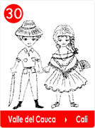
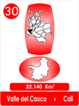
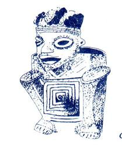
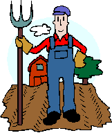

30- El Canasto De Oro - Valle Del Cauca
- Consulta a Jesús
- Fábulas de Colombia
- Metodo Corima
- Arbol
- Flor
- Fruto
- Estrellas Pequeñas
- Nostradamus
- La Ruta del Sol
- Fabula de Corima
- Productos y Servicios
- Mensajeros Celestiales
- Juguemos
- Articulos
- Estrellas Humanas
- Herramientas
- Plantas Milagrosas
- Adorables Fechas
- Videos


La Cacica Kala, jefe de los IIamas de la zona Calima, soñó que acurrucada debía hacer un trato con el Rey Sol, para pedirle que no usara tanto sus rayos porque les dañaba las siembras, para sus terrazas artificiales.
Ella y su pueblo de agricultores, habían creado esas terrazas artificiales en el Río Tambor, que sonaba así de fuerte cuando golpeaba las piedras.
Como necesitaban que el agua fuera bien limpia, sin piedras y yerbas para que no arrastraran las semillas, inventaron unos canastos de tejido muy fino que servían de coladores en la boca toma, y en los caminitos de agua para regar los cultivos.
Pero la Cacica le tenía pavor a los rayos del Soberano Sol, eran tan fuertes que les secaba el agua que habían colado con los canastos.
Entonces ayunó tres días, y para que el sueño se le cumpliera, hizo lo que creyó era una orden de los Protectores de los Cultivos.
Tejió un gran canasto y lo untó de la resina pegajosa de árbol y con cuidado lo regó con polvo de oro, luego se bañó con yerbas olorosas y cubrió su cuerpo desnudo con más polvo de oro, como lo había hecho con el canasto.
Se colocó la diadema de oro de las ceremonias, las pulseras en brazos y piernas y en pleno mediodía, se presentó ante el Rey Sol.

Y en medio del jardín lo imploro diciendo;
Soberano Señor, en representación de mi pueblo, donde tenemos nuestras viviendas y cultivos, te pedimos nos permitas el agua que necesitamos para nuestras siembras.
Aquí acurrucada te lo pido y te ofrezco en adelante, fabricar canasteros que llevaremos en la espalda, por muchos días y muchas noches. Permítenos disfrutar, gota a gota del Agua que necesitamos en nuestros sembrados.
Desde ese día los artistas de la región Calima, crearon figuras de hombres y mujeres en oro, bien acurrucaditos en señal de sumisión.
Agregaron otras figuras de oro, para ofrendarlas al Creador, con formas de águilas, jaguares, armadillos, collares y pectorales.
Y las figuritas modeladas en posición acurrucada, llevan en la espalda un canasto que se confunde con el cuerpo, así honraron al Soberano Sol!
Y han sido los Canasteros los que identifican al pueblo de los Ilamas, Cultura
Calima tan antigua que se desarrolló en el Valle del Cauca.
( Lo certifican los Arqueólogos que lo han estudiado).
